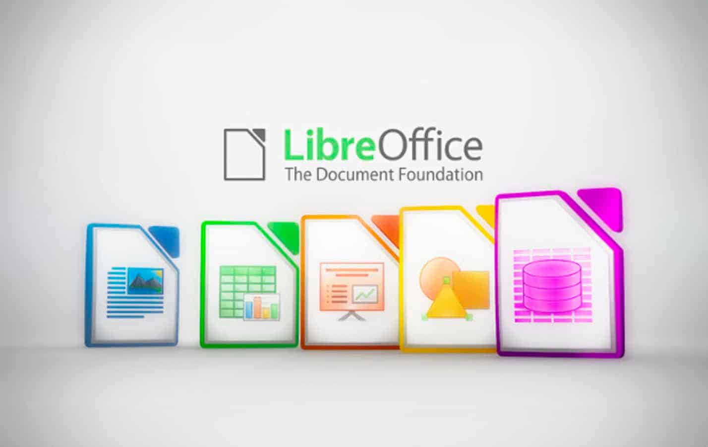
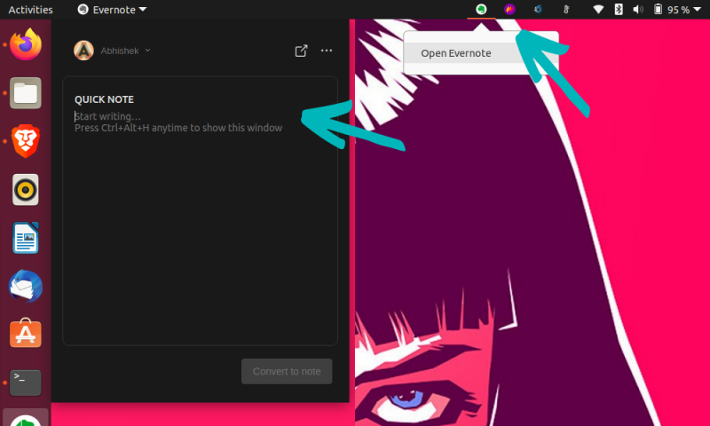
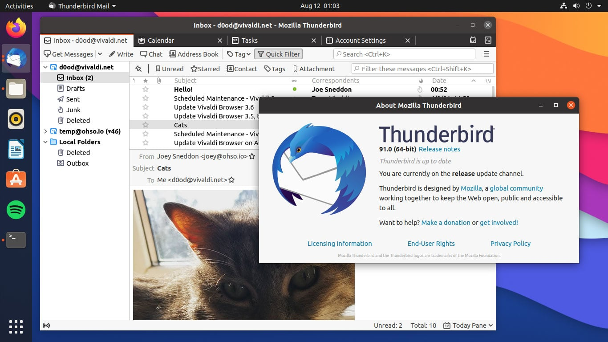
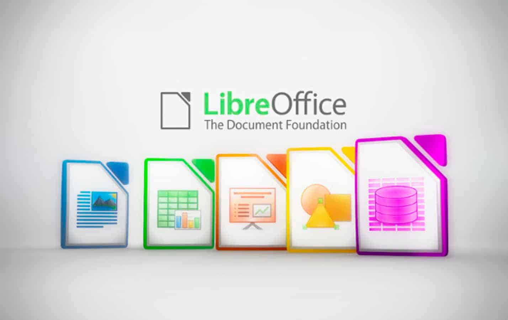
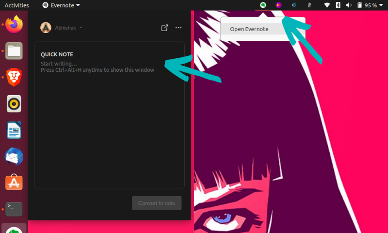
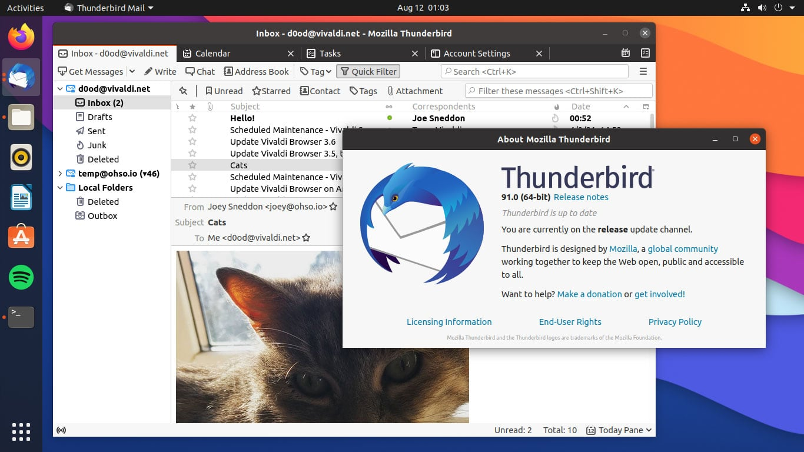

LibreOffice
Alternativa gratuita ao Microsoft Office, pré-instalado em muitas versões do Ubuntu.
Evernote
Para organização e anotações.
Thunderbird
Cliente de email e calendário integrado, mantido pela Mozilla.
Alternativa gratuita ao Microsoft Office, pré-instalado em muitas versões do Ubuntu.
Para organização e anotações.
Cliente de email e calendário integrado, mantido pela Mozilla.
